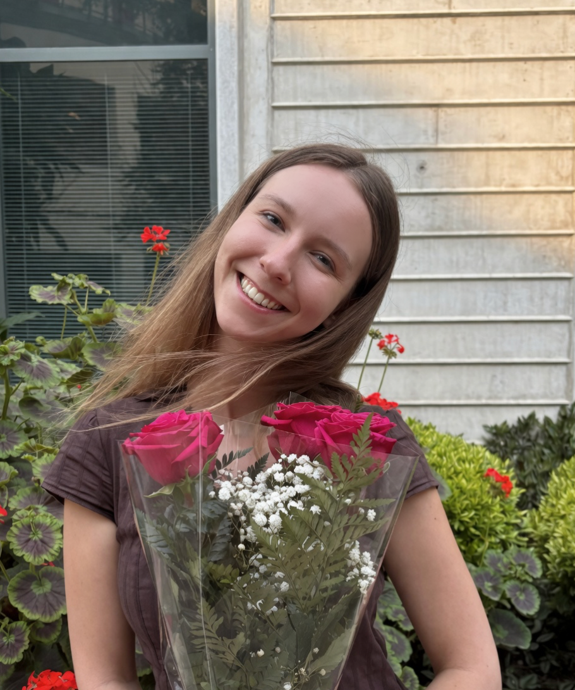

Welcome to my portfolio
Environmental Scientist · Applied Marine Sciences | M.E.S.M. 2026, UC Santa Barbara Bren School | Water Resources · Pollution Remediation · Data Science
Co-authoring a manuscript on heavy metal contamination in the Pilcomayo River Basin — spatiotemporal dynamics, sediment-water partitioning, and geochemically targeted remediation strategies, with Dr. Arturo Keller, UCSB.
View ResearchI work at the intersection of environmental science, field research, and data analytics — turning complex environmental data into actionable insights for water quality, watershed health, and pollution remediation. Now bringing those skills to Applied Marine Sciences full-time.
"The health of our water systems is a mirror of our relationship with the natural world."
River remediation capstone, interactive R Shiny dashboards, watershed management plans, and machine learning for conservation.
Explore ProjectsPilcomayo River heavy metals manuscript (in prep), YOLOv8 pollinator AI, and graduate & undergraduate theses in environmental science.
View ResearchTechnical scientific writing samples demonstrating rigorous environmental communication across hydrology, remediation, and marine science.
Read Samples